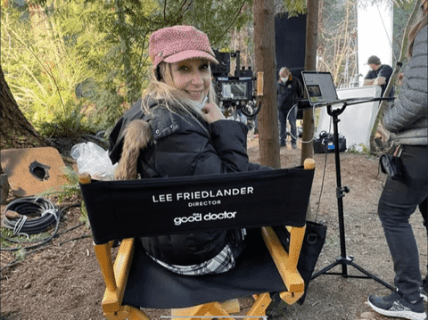
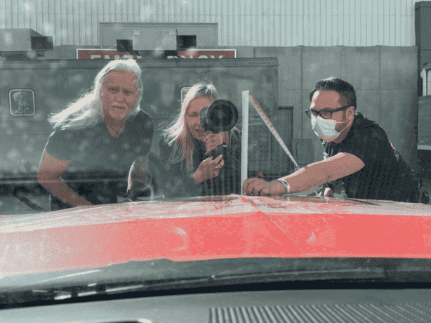
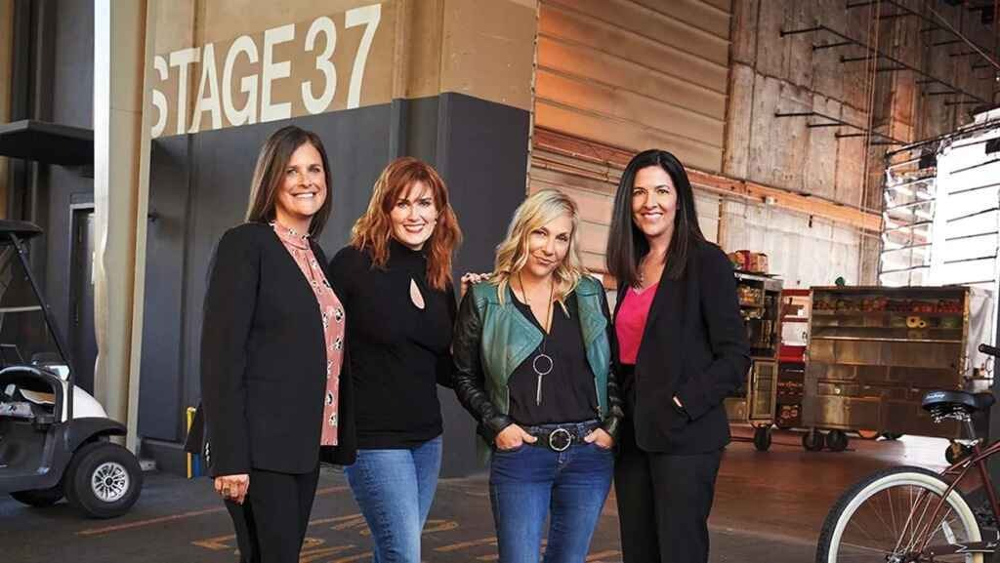
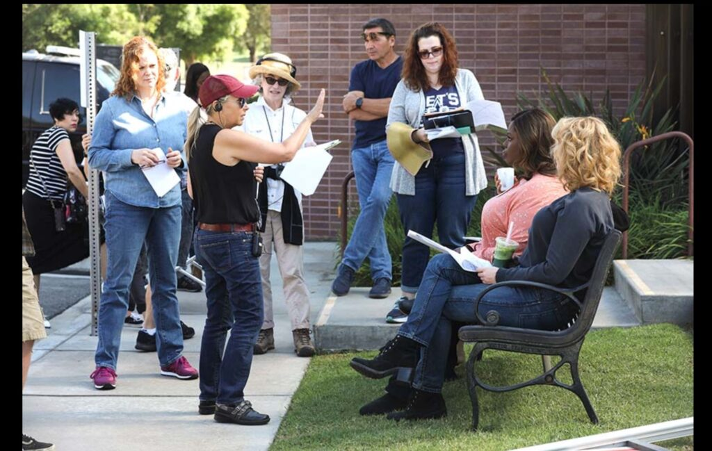

Lee Friedlander is an award-winning LGBT filmmaker and Connecticut native who began her career as a theater actor and director. After relocating to Los Angeles, Lee quickly made her mark as a producer, bringing over a dozen independent films to fruition.
Lee directed the critically acclaimed short film, The Ten Rules: A Lesbian Survival Guide, which paved the way for the groundbreaking television series Exes & Ohs on Logo/MTV/Viacom which Lee co-created, executive produced, and directed the pilot.
Lee made an impact in the television long-form world, directing and co-writing over a dozen movies of the week (MOWs).
She was one of only 10 women selected from thousands for the inaugural year of NBCUniversal's Female Forward. Through this program, she directed Good Girls and was asked back the next season to direct multiple episodes.
Lee then went on to direct The Good Doctor and recently directed the action packed fall finale of Chicago Med. She recently directed NCIS and DOC. And sold three TV movies.
Lee also directed Avril Lavigne’s music video Give You What, and collaborated on Avril’s Warrior video, which honored frontline workers.
Currently, Lee has several movies in development based on true stories and best selling Novels. She resides in Marina Del Rey and in her down time you can find her hosting friends for dinner and cruising on her little boat with her wife Lisa France.

Good Girls showrunner Jenna Bans was skeptical when NBC scripted programming co- presidents Lisa Katz and Tracey Pakosta approached her to take on a first-time episodic director as part of the network’s new Female Forward initiative. “I admired what Lisa and Tracey were trying to do,” she says, “but a problematic director’s cut can set the showrunner back days, if not weeks. Time lost to a bad cut, a problem on set -all of it directly affects time with my fam- ily. I was deeply concerned that the episode would suffer because of her inexperience.” Katz and Pakosta admit that it was a big ask. To sweeten the pot, NBC pays for participants to shadow on up to three episodes before taking the reins. The network offers to hire a second, experienced director as a guarantor – “a backstop, not a babysitter,” says Katz – for any show that requests

one, as well as covers any reshoots. “We’re not going to jeopardize our shows for anything,” Katz adds. “We’re going to minimize risk as much as possible.” Unlike other industry programs designed to boost opportunities for directors from traditionally marginalized backgrounds, Female Forward is the first to guarantee an in-season episodic credit. (This year, the network’s Emerging Director program, which for 10 years has provided
SUSAN SUSSMAN Innovative Artists Agency 310.656.5133
MANAGER: EVOKE ENTERTAINMENT, STAN SPRY, LUIS PINEIRO, JEFF HOLLAND